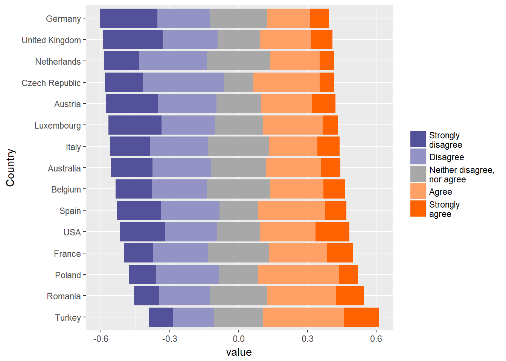
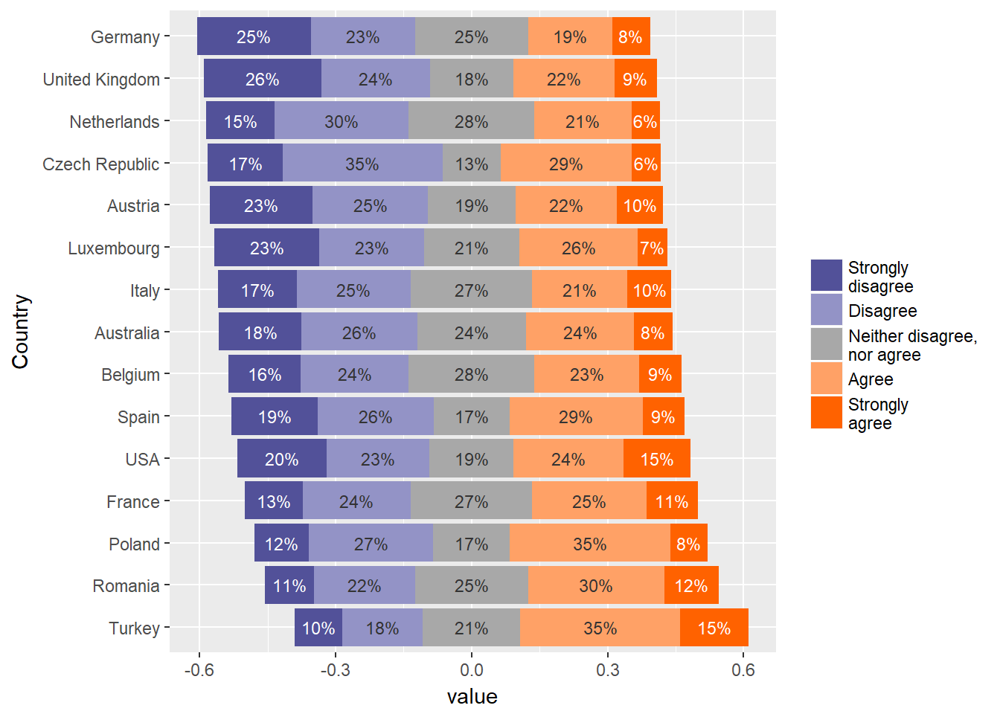
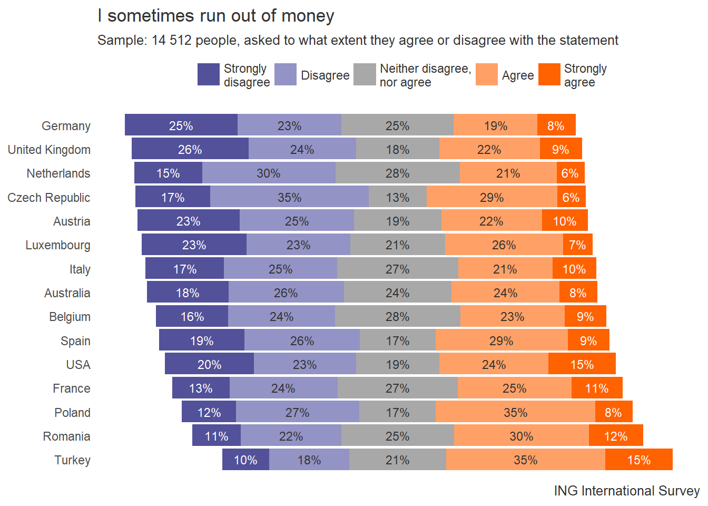

It is quite common in surveys to ask respondends to reveal their attidute towards a particular opinion on a 5-point scale. For instance whether they (1) strongly agree, (2) agree, (3) neither agree, nor disagre, (4) disagree or (5) strongly disagree with it. Such scale could contain from 3 to 7 points of reference and is often called “Likert scale”.
There is one particular type of chart that nicely visualizes Likert-scale answers - the “diverging stacked bar chart”. It’s anchored in the middle of most “indifferent” part of survey sample. The position of each bar represents the balance of opinion. The more the bar is shifted to a particular direction, the more agreeable or disagreeable the population is. Thus multiple bars can be easily compared to each other. To be fair, people differ in their opinions towards this type of visualization. It’s advantages are nicely explained here and here, but it is good to know also a critical opinion.
Anyway, I like this type of plot and use it a lot. It wasn’t easy though to learn how to create them with R. Therefore, I decide to share my method here. In general, there are two ways of creating such plot.
The first one is more tedious, but allows for more flexibility. It uses ggplot2 package and “geom_bar” aestethics. You can find it’s description here: http://rnotr.com/likert/ggplot/barometer/likert-plots/
The second one comes from the same author (http://rnotr.com/likert/ggplot/barometer/likert-plotly/) and also uses ggplot2 but with “geom_segment” aestethics. It is simpler and more concise, but also blocks “color” argument for other use on the chart. This might be a problem if you want to have data-labels on the chart and color them black on light background and white on dark background.
In the example below I will use the real data from ING International Survey. In one of the surveys (on Savings in 2017), the respondets were asked to indicate to what extent they agree or disagree with the following opinion: “I sometimes run out of money”. I will use the first of the methods I’ve mentioned above, because I like the flexibility that comes with it.
Let’s start with preparing the survey data, accoring to a recipe described in “Home” tab.
data_2 <- read.csv("survey_data.csv")
answers <- names(wpct(data_2$Question, weight = data_2$WeightPerCountry))
freq_table_2 <- data_2 %>%
group_by(Country) %>%
do(as.data.frame(wpct(.$Question, .$WeightPerCountry, na.rm = TRUE))) %>%
mutate(answers = answers) %>%
spread(key = answers, `wpct(.$Question, .$WeightPerCountry, na.rm = TRUE)`)| Country | Agree | Disagree | Neither agree nor disagree | Strongly agree | Strongly disagree |
|---|---|---|---|---|---|
| Australia | 0.2392064 | 0.2557912 | 0.2394660 | 0.0842320 | 0.1813044 |
| Austria | 0.2237938 | 0.2535581 | 0.1932286 | 0.1015034 | 0.2279161 |
| Belgium | 0.2313389 | 0.2373775 | 0.2780002 | 0.0931191 | 0.1601644 |
| Czech Republic | 0.2897621 | 0.3515953 | 0.1286656 | 0.0635708 | 0.1664062 |
| France | 0.2519479 | 0.2392816 | 0.2671715 | 0.1137671 | 0.1278319 |
| Germany | 0.1854536 | 0.2303102 | 0.2490855 | 0.0846774 | 0.2504733 |
Our first step in obtaining Likert-style plot is to divide the middle group (in our case: “Neither agree nor disagree” group) into two equal subgroups. To do that mutate freq_table in the following way and then order the columns from least agreeable to most agreeable (getting rid of now obsolete Neither agree nor disagree column in the process). I will also add variables for negative data-labels positions (label_position for “Disagree” and label_position_2 for “Strongly disagree”). I will go back to them later.
freq_table_2 <- freq_table_2 %>%
mutate(Midlow = `Neither agree nor disagree`/2,
Midhigh = `Neither agree nor disagree`/2,
label_position = - Midlow - Disagree/2,
label_position_2 = - Midlow - Disagree - `Strongly disagree`/2)
freq_table_2 <- freq_table_2[c(1, 6, 3, 7, 8, 2, 5, 9, 10)]
# Transforming data-frame into a long format
freq_table_long_2 <- freq_table_2 %>%
gather(key = "key", value = "value", 2:7, - Country, - label_position, - label_position_2)Third step is to transform your data into a long format. One popular way of doing it is to use melt function from reshape2 package. However, if you like to stay within tidyverse framework you may use a gather function from dplyr package. I will also take this opportunity, to integrate two label_position variables into one (by ifelse statement) and add a label_color variable. I will use it to put white data-labels on dark background and black data-labels on bright background. I’ll explain that later
However, long data format itself is not enough. You need to arrange it in the right way. Let’s start with the answers (denoted here as “key”). You need to define them as factor with levels spanning from least to most favourable (from “Strongly disagree” to “Strongly agree”) remembering that you got “Midhigh” and “Midlow” instead of one middle answer.
Next, the countries or other variable you’d like to show on the plot. These are factors as well and you need to arrange them according to the length of the bar on the left or right of the neutral line on the plot.
freq_table_long_2 <- freq_table_2 %>%
gather(key = "key", value = "value", 2:7, - Country) %>%
mutate(label_position = ifelse(key == "Strongly disagree", label_position_2, label_position),
label_color = ifelse(key == "Strongly agree" | key == "Strongly disagree", "a", "b")) # a variable to differentiate label-color depending on the background.
freq_table_long_2$key <- factor(freq_table_long_2$key,
levels = c("Strongly disagree",
"Disagree",
"Midlow",
"Midhigh",
"Agree",
"Strongly agree"))
freq_table_long_2$Country <- factor(freq_table_long_2$Country,
levels = freq_table_2$Country[order(-(freq_table_2[, 5] + freq_table_2[, 6] + freq_table_2[, 7]))])| Country | label_position | label_position_2 | key | value | label_color |
|---|---|---|---|---|---|
| Australia | -0.4661764 | -0.4661764 | Strongly disagree | 0.1813044 | a |
| Austria | -0.4641305 | -0.4641305 | Strongly disagree | 0.2279161 | a |
| Belgium | -0.4564598 | -0.4564598 | Strongly disagree | 0.1601644 | a |
| Czech Republic | -0.4991312 | -0.4991312 | Strongly disagree | 0.1664062 | a |
| France | -0.4367833 | -0.4367833 | Strongly disagree | 0.1278319 | a |
| Germany | -0.4800896 | -0.4800896 | Strongly disagree | 0.2504733 | a |
Next step is to split the freq_table_long into two separate datasets, one for positive bars (“highs”) and the other for negative bars (“lows”). Those datasets should be ordered separately in this specific way. Otherwise the bars on the chart will be stacked in the wrong order.
lows <- freq_table_long_2[1:(nrow(freq_table_long_2)/2),]
lows$key <- factor(lows$key, levels = c("Strongly disagree", "Disagree", "Midlow"))
highs <- freq_table_long_2[(nrow(freq_table_long_2)/2+1):nrow(freq_table_long_2),]
highs$key <- factor(highs$key, levels = c("Strongly agree","Agree", "Midhigh"))This is enough to create a very basic Likert-scale plot. It shows quite well, which country is most leaning to agree with the statment that “Statement” and which tends to disagree most often. However, the colors on the chart and the legend are very confusing and need to be improved.
ggplot() +
geom_bar(data = highs,
aes(x = Country,
y = value,
fill = key),
stat = "identity") +
geom_bar(data = lows,
aes(x = Country,
y = - value,
fill = key),
stat = "identity") +
theme(legend.position = "right") +
coord_flip()I like to design colors on the Likert plot in a way that makes the chart more intuitive and easier to read. The following rules seem to help in my opinion: * Assign warm colors for positive answers and cold colors for negative. * Assign saturated colors to strong answers (e.g. “Strongly agree”) and less saturated for more balanced opinions. * Assign grey color for ambiguity.
For Likert-plot you need to specify two palettes. One for legend - with separate color for each Likert-scale answer. And the other one with doubled color for the middle answer on the Likert scale (for “Midlow” and “Midhigh” separately). Moreover, we need to specify what will appear on the legend. I also specify a third palette for colors of data-labels (just two of them: white and dark grey).
palette_legend <- c("#525199", "#9393C6", "#A8A8A8", "#FFA166", "#FF6200")
palette_plot <- c("#525199", "#9393C6", "#A8A8A8", "#A8A8A8", "#FFA166", "#FF6200")
palette_labels <- c("white", grey(.2))
legend <- c("Strongly\ndisagree", "Disagree", "Neither disagree,\nnor agree", "Agree", "Strongly\nagree")In order to include these colors in the plot we need to go back to the freq_table_long_2 and assign an appropriate color to each key by adding a new column. Next you need to split the table into highs and lows again and arrange them as factors in correct order.
freq_table_long_2$color <- rep(palette_plot, each = length(unique(freq_table_long_2$Country)))
lows <- freq_table_long_2[1:(nrow(freq_table_long_2)/2),]
lows$key <- factor(lows$key, levels = c("Strongly disagree", "Disagree", "Midlow"))
highs <- freq_table_long_2[(nrow(freq_table_long_2)/2+1):nrow(freq_table_long_2),]
highs$key <- factor(highs$key, levels = c("Strongly agree","Agree", "Midhigh"))
highs$color <- factor(highs$color, levels = c("#FF6200","#FFA166","#A8A8A8"))Now we can draw the plot again, but this time the fill parameter in the geom_bar will be assigned the color variable instead of key variable.
chart <- ggplot() +
geom_bar(data = highs,
aes(x = Country,
y = value,
fill = color),
stat = "identity") +
geom_bar(data = lows,
aes(x = Country,
y = - value,
fill = color),
stat = "identity") +
theme(legend.position = "right") +
scale_fill_identity("", labels = legend, breaks = palette_legend, guide = "legend") +
scale_color_manual(values = palette_plot, guide = FALSE) +
coord_flip()
chart
The chart looks nice, but a is a bit hard to read. You can easily assess the balance of opinion in a paricular country compared to other counries. But that’s generally it. If you’d like to know what percentage of population in Netherlands agrees or strongy agrees with the “Statment” the chart won’t be of much help. The x axis is essentially useless. The solution is to add data-labels.
Unfortunately, adding data-labels to a Likert-style chart is quite complicated. You need to do it separately for highs, lows and for the middle answer dataframes. It is easy for highs and for middle answers. The geom_text statement will do it for you in the following way:
chart <- chart +
# Data-labels for positive answers
geom_text(data = highs,
aes(label = ifelse(key == "Midhigh" | value <= 0.05, "", percent(value, accuracy = 1)),
x = Country,
y = value,
color = factor(label_color)),
size = 3, position = position_stack(vjust = 0.5)) +
# Data-labels for ambiguity (Midhight + Midlow)
geom_text(data = freq_table_2,
aes(label = scales::percent(Midlow + Midhigh, accuracy = 1),
x = Country,
y = 0),
size = 3, color = grey(.2)) +
scale_color_manual(values = palette_labels, guide = FALSE)Unfortunately, if you try to use the same function with lows dataframe, the labels will be ill-positioned. The “position = position_stack” parameter won’t work correctly. I hope this will be improved with one of the ggplot updates in the future. Fortunately, we have already calculated the positions of data-labels for negative answers (data-preparation step) and stored them in label_position variable. We can use it in the following way.
chart <- chart +
# Data-labels for negative answers
geom_text(data = lows,
aes(label = ifelse(key == "Midlow" | value <= 0.05, "", percent(value, accuracy = 1)),
x = Country,
y = label_position,
color = factor(label_color)),
size = 3)
chart
And some final touches. Let’s clean the plot from unnecessary non-data ink. And put some title, subtitle and caption to it. The exact dimentions could be corrected by trial ane error method directly in RStudio.
chart <- chart +
labs(title = "I sometimes run out of money",
subtitle = "Sample: 14 512 people, asked to what extent they agree or disagree with the statement",
caption = "ING International Survey") +
theme_classic() +
theme(axis.line = element_blank(),
axis.ticks = element_blank(),
axis.text.x = element_blank(),
axis.title = element_blank(),
legend.position = "top",
text = element_text(color = grey(.2)))
chart